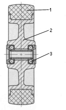
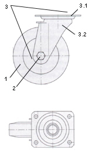

Колесо
Колесная опора
Простые, недорогие, в большинстве случаев не требуют ухода, устойчивы к коррозии. Используют в основном в области аппаратных роликов и роликов транспортного оборудования, на объектах, не требующих постоянных передвижений и передвигающихся лишь на низких скоростях.
Прочные, стойкие, почти не требуют ухода, достаточно компактные. Основное использование: транспортное оборудование. (Роликовые подшипники иногда называют игольчатыми).
Отвечают самым высоким требованиям в отношении грузоподъемности, ходовых характеристик (даже при высоких скоростях) и устойчивости к влияниям окружающей среды. Используются, главным образом, в технически более совершенных роликах транспортного оборудования и большегрузных роликах.